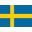

<md-toolbar color="primary" class="headToolbar">
  <button md-button [routerLink]="['/home']">KeyCam</button>

  
  
  
  &nbsp;&nbsp;
  <md-select placeholder="Language" [(ngModel)]="selectedValue" (change)="flagSelected()" name="flag">
    <md-option *ngFor="let food of foods" [value]="food.value">
      {{ food.viewValue }}&nbsp;&nbsp;
      
    </md-option>
  </md-select>

  <span class="example-spacer"></span>

  <button md-button [routerLink]="['/team']">{{ 'MENU.team' | translate }}</button>
  <p md-button *ngIf="user; else username">{{ user }}</p>

  <ng-template #username>
    <button md-button (click)="openDialog()">{{ 'MENU.login' | translate }}</button>
  </ng-template>

</md-toolbar>
<router-outlet></router-outlet>
<footer>
  <app-footer></app-footer>
</footer>
